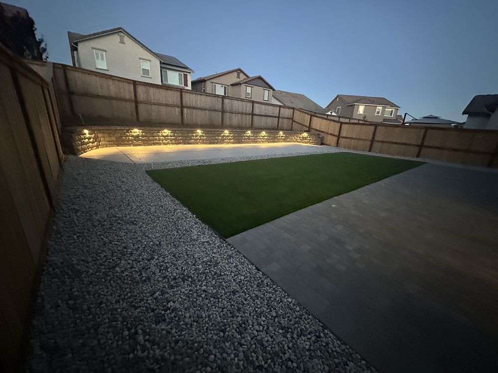
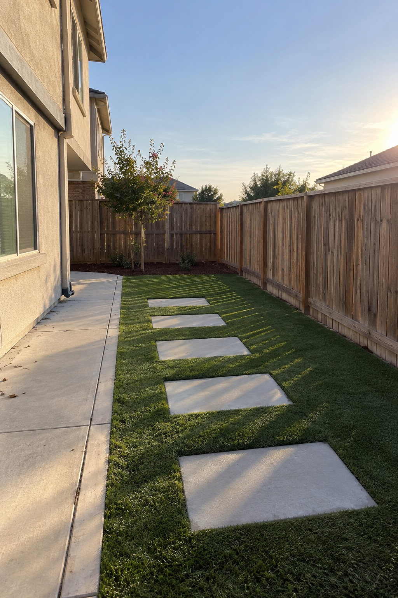
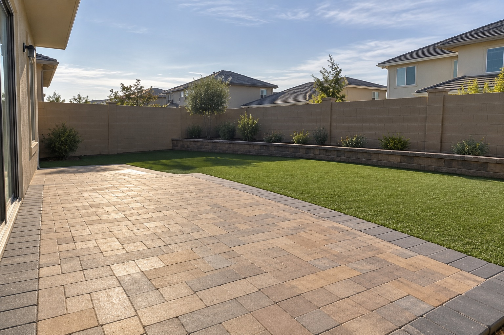
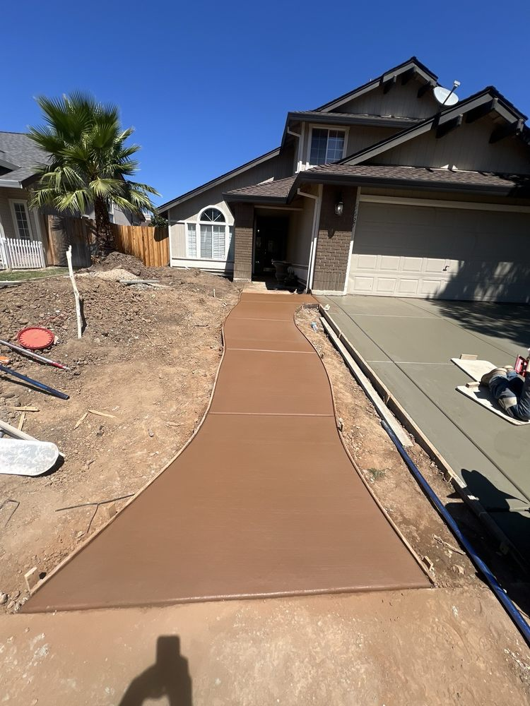
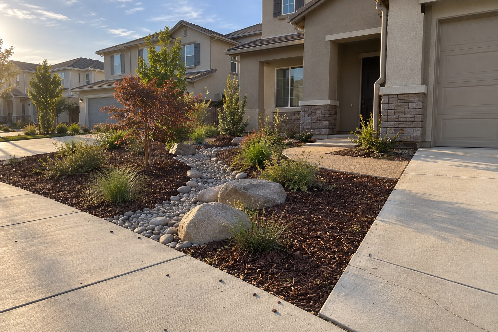
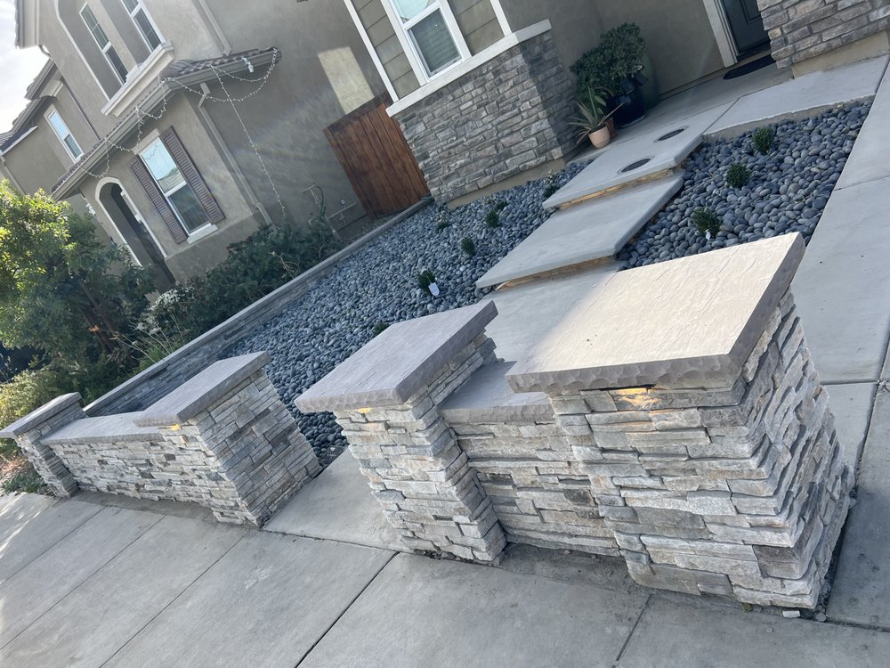
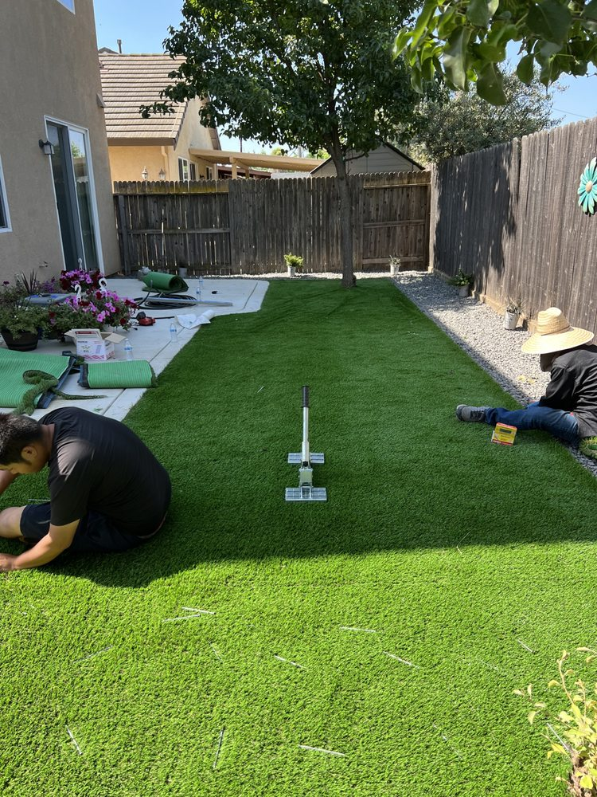
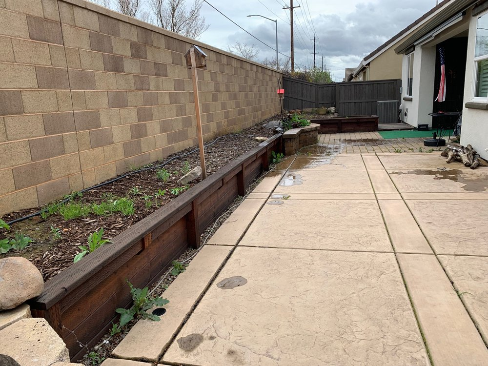
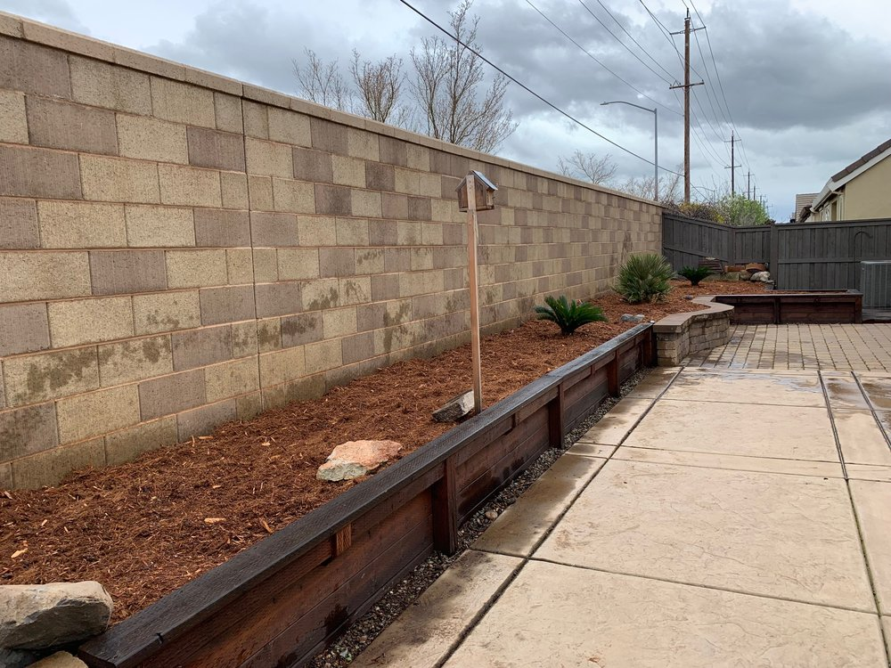

Artificial turf
Front yards, back yards, pet runs and play areas. Soft, green and zero mowing.
Elk Grove's turf & hardscape crew
Artificial turf, pavers and concrete, built fast and priced fair. Most projects start the day after you say yes.

What we do

Front yards, back yards, pet runs and play areas. Soft, green and zero mowing.

Walkways, patios and driveways laid tight and level, built to last.

Slabs, walkways and repairs, plus stacked-stone walls and planters.

River rock, mulch and tough plants that look great on a small water bill.

Stone and block walls that tame slopes and frame your yard.

Tell us what you picture. We plan it, price it, and build it.
Recent work


How it works
What neighbors say
“Once we agreed to work with him, Tom was immediately there the next day with his crew to get started.”Yelp reviewer
“He responded promptly to my request for a quote and was very reasonable in price.”Yelp reviewer
“He helped us cover a lot of space from the slope.”Yelp reviewer
Service area
Based in Elk Grove and working across the surrounding area. Not sure if we cover you? Just ask.
Free quote
We usually reply the same day. Prefer to talk? Call (555) 000-0000.
Open 7 days · 6:00 AM – 7:00 PM